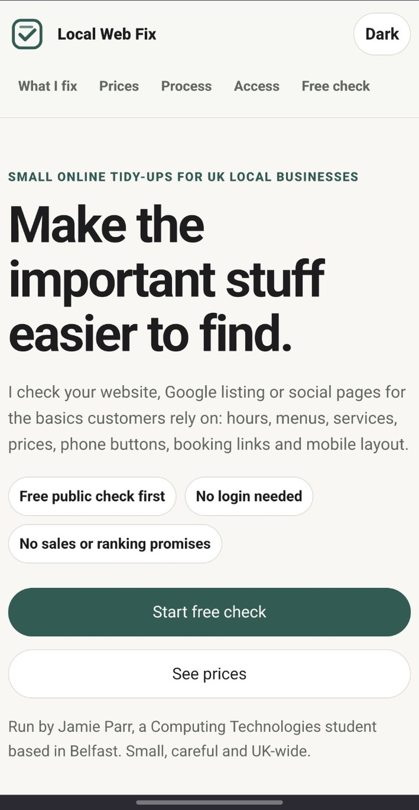
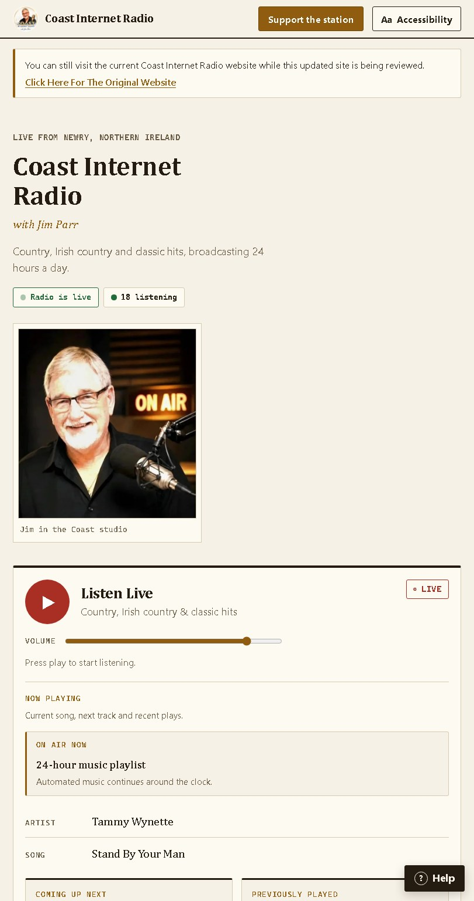

Technical
- HTML
- CSS
- JavaScript basics
- Python basics
- Microsoft Office
- Windows
- Troubleshooting
- Responsive design
- Accessibility awareness
- Netlify Functions
- GitHub Actions
Belfast, Northern Ireland
I study at Ulster University in Belfast and build practical projects alongside work and study: static websites, service sites, and a privacy-conscious chat app with accounts, serverless functions and persistent conversations. I am currently looking for full-time summer work in Belfast, with flexibility to continue part-time from September.
About
I have worked alongside study since 2021, mainly across warehouse, stockroom and service environments. That has given me a useful mix of practical experience: packing orders, sorting stock, supporting deliveries, helping customers, following procedures and staying calm during busy shifts.
I am especially interested in roles where I can combine that workplace reliability with my Computing Technologies course, such as entry-level IT support, helpdesk, admin, data entry, warehouse admin and technical support roles.
Skills
These are the areas I can speak about honestly from my course, work experience, Local Web Fix and the Coast Internet Radio project.
Projects
These projects show different sides of my work: a serverless chat app with accounts and privacy boundaries, a small service website, and a live radio website for real listeners.
Featured technical project
Most technical project
A privacy-conscious personal chat app built on Netlify. It supports guest sessions, registered accounts, persistent conversations, admin tools, rate limiting and private context retrieval.
The strongest part is the separation between public-safe context and private administration features. Raw source material stays out of GitHub and the deployed site, while the app uses serverless functions, signed cookies, Netlify Blobs and automated tests to keep the project controlled.

Newest project
A small service website I built to help UK local businesses check the simple online details customers rely on: opening hours, menus, prices, phone buttons, booking links, Google details and mobile layout.
It includes a clear free-check flow, pricing, privacy and scope pages, safer access guidance and plain-English wording so businesses know what is included before anything changes.

Live website project
A real-world website project for a live online radio station. I worked on layout, mobile responsiveness, accessibility, listener experience, stream-related features and content update controls.
Experience
Packing toys and products, sorting stock, supporting Amazon fulfilment orders, helping prepare deliveries and following warehouse procedures in a small team.
Supporting kitchen and front-of-house staff during busy service, maintaining hygiene standards, handling equipment and helping with stock rotation.
Customer support, answering queries, stock replenishment, preparing areas for events and adapting to varied tasks during shifts.
Education
BSc (Hons) Computing Technologies
September 2025 - July 2029 expected
Foundation work across programming, computing systems, web technologies and problem-solving.
Certification
Certiport - A Pearson VUE Business
Passed May 2023
Included to support entry-level web, IT support and practical technical applications.
College
Level 3 Extended Diploma in Technology
2022 - 2024, Grade D*DD
Built a stronger base in general computing and helped lead into my current university course.
Currently looking for
I am open to entry-level IT support, helpdesk, admin, data entry, warehouse admin, stockroom, retail replenishment, practical support roles and junior web support opportunities where I can keep learning.